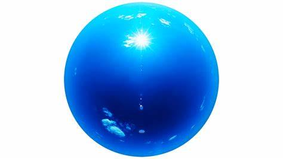

YeeZyFOUNDation
WELCOME TO YeeZyFOUNDation
WE offer teaching services to talents all abroad South Africa that need a distinguished platform. Welcome to the vibrant digital gateway of a newly and great potential academic institution,where we allow free creativity so
learners to thrive and their artistic are nurtured with passion and purpose. As you embark on this digital journey with our homepage,you are welcomed into our diverse community of artists,scholars, and visionaries dedicated to pushing the boundaries of your artistic expression.
Here,amidst resources and opportunities designed to inspire,educate, and empower you are guranteed success. WE are dedicated to complete service.
From immersive equipment to breathe taking showcases of stundent artwork and musical masterpieces,our homepage serves as a vibrant starter,inviting you to explore the eloquent tapestry of artistic talent that defines our foundation.
Whether you're a prospective student eager to embark on your artistic jouney,a professional seeking more refining,or an artist fanatic eager to engage with our community,
our homepage offers a wealth of information and insights to satisfy your curiosty and ignite your passion for the arts.
Explore our latest news and events to stay updated on the pulse of our creative community,browse our diverse range of programs and courses to find for your perfect fit for artistic aspirations,and connect with our foundation and alumni to access our network of support and mentorship.
In the virtual world of our home page, the possibilities are endless,and the journey is yours to chart.
So come,discover ,and experience the transformative power of art with us as we embark on this exhilarating voyage of innovation and discovery together.
Welcome home to our vibrant artistic community.